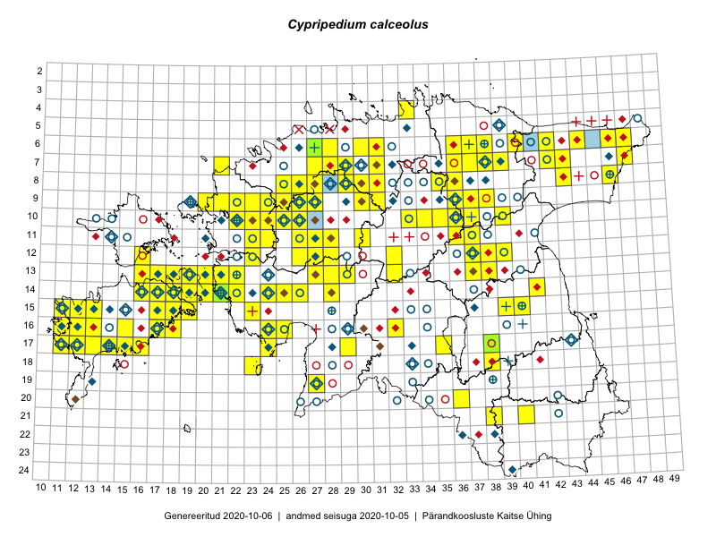

Cypripedium calceolus
Uuendatud: 2016-12-07
Kaardile koondatud taksonid: Cypripedium calceolus L.

Kaart põhineb 193 vaatlusel. Taime on leitud 64 ruudust.
| Ruut | Vaatleja(d) | Vaatlusaeg | Kirje tüüp | Viide andmebaasikirjele |
|---|---|---|---|---|
| 07-42 | Toomas Kukk, Peedu Saar | 2014-09-25 | ruut/ala | vaata PlutoFis |
| 07-42 | Toomas Kukk, Peedu Saar | 2014-09-25 | punkt | vaata PlutoFis |
| 07-42 | Toomas Kukk, Peedu Saar | 2014-09-25 | punkt | vaata PlutoFis |
| 06-40 | Toomas Kukk, Peedu Saar | 2014-09-24 | ruut/ala | vaata PlutoFis |
| 06-40 | Toomas Kukk, Peedu Saar | 2014-09-24 | punkt | vaata PlutoFis |
| 06-42 | Peedu Saar, S. Laherand | 2015-05-30 | punkt | vaata PlutoFis |
| 10-35 | Peedu Saar, Ott Luuk | 2015-07-27 | ruut/ala | vaata PlutoFis |
| 10-35 | Ott Luuk, Peedu Saar | 2015-07-27 | punkt | vaata PlutoFis |
| 08-29 | Ott Luuk, Peedu Saar | 2015-09-04 | punkt | vaata PlutoFis |
| 06-42 | Peedu Saar, Sander Laherand | 2015-05-30 | ruut/ala | vaata PlutoFis |
| 06-42 | Peedu Saar, S. Laherand | 2015-05-30 | punkt | vaata PlutoFis |
| 14-16 | Ott Luuk, Elle Roosaluste, Jaak-Albert Metsoja | 2015-06-15 | ruut/ala | vaata PlutoFis |
| 16-17 | Peedu Saar | 2015-09-07 | ruut/ala | vaata PlutoFis |
| 16-17 | Peedu Saar | 2015-09-07 | punkt | vaata PlutoFis |
| 16-17 | Meeli Mesipuu, Kadri Tali | 2015-07-06 | ruut/ala | vaata PlutoFis |
| 14-28 | Ott Luuk, Hannes Pehlak | 2015-06-10 | ruut/ala | vaata PlutoFis |
| 13-37 | Eeva-Maria Jeletsky, Tarmo Niitla | 2015-05-17 | punkt | vaata PlutoFis |
| 13-37 | Eeva-Maria Jeletsky, Tarmo Niitla | 2015-05-17 | ruut/ala | vaata PlutoFis |
| 10-22 | Toomas Kukk, Thea Kull | 2014-08-21 | ruut/ala | vaata PlutoFis |
| 10-22 | Toomas Kukk, Thea Kull | 2014-08-21 | punkt | vaata PlutoFis |
| 06-44 | Toomas Kukk, Peedu Saar | 2014-09-11 | punkt | vaata PlutoFis |
| 06-44 | Toomas Kukk, Peedu Saar | 2014-09-11 | ruut/ala | vaata PlutoFis |
| 14-16 | Ott Luuk, Elle Roosaluste, Jaak-Albert Metsoja | 2015-06-15 | punkt | vaata PlutoFis |
| 15-23 | Indrek Tammekänd, Kadri Runnel, Leho Tedersoo, Urmas Kõljalg | 2015-08-19 | punkt | vaata PlutoFis |
| 08-35 | Jana-Maria Habicht, Ester Valdvee, Kirke Pilvik | 2015-07-14 | ruut/ala | vaata PlutoFis |
| 09-36 | Jana-Maria Habicht, Ester Valdvee, Tiiu Liimets | 2015-07-07 | ruut/ala | vaata PlutoFis |
| 14-22 | Indrek Tammekänd | 2015-05-31 | punkt | vaata PlutoFis |
| 14-24 | Indrek Tammekänd | 2015-06-04 | punkt | vaata PlutoFis |
| 09-36 | Jana-Maria Habicht, Ester Valdvee, Tiiu Liimets | 2015-07-07 | ruut/ala | vaata PlutoFis |
| 16-24 | Indrek Tammekänd | 2014-06-28 | punkt | vaata PlutoFis |
| 16-25 | Indrek Tammekänd | 2015-07-17 | punkt | vaata PlutoFis |
| 08-43 | Thea Kull, Eerik Leibak | 2015-07-24 | punkt | vaata PlutoFis |
| 14-19 | Meeli Mesipuu, Kadri Tali | 2015-05-10 | ruut/ala | vaata PlutoFis |
| 14-19 | Meeli Mesipuu, Kadri Tali | 2015-05-10 | punkt | vaata PlutoFis |
| 16-32 | Maria Abakumova | 2015-07-07 | ruut/ala | vaata PlutoFis |
| 16-32 | Maria Abakumova | 2015-06-17 | ruut/ala | vaata PlutoFis |
| 09-36 | Jana-Maria Habicht, Ester Valdvee, Tiiu Liimets | 2015-07-07 | punkt | vaata PlutoFis |
| 08-35 | Jana-Maria Habicht, Ester Valdvee | 2015-07-15 | punkt | vaata PlutoFis |
| 08-35 | Jana-Maria Habicht, Ester Valdvee | 2015-07-15 | punkt | vaata PlutoFis |
| 08-35 | Jana-Maria Habicht, Ester Valdvee | 2015-07-15 | punkt | vaata PlutoFis |
| 08-35 | Jana-Maria Habicht, Ester Valdvee | 2015-07-15 | punkt | vaata PlutoFis |
| 08-35 | Jana-Maria Habicht, Ester Valdvee | 2015-07-15 | punkt | vaata PlutoFis |
| 17-12 | Mari Reitalu | 2014-09-02 | ruut/ala | vaata PlutoFis |
| 17-12 | Mari Reitalu | 2014-09-02 | punkt | vaata PlutoFis |
| 14-19 | Meeli Mesipuu | 2015-06-20 | ruut/ala | vaata PlutoFis |
| 14-19 | Meeli Mesipuu | 2015-06-20 | punkt | vaata PlutoFis |
| 13-37 | Ülle Jõgar, Illi Tarmu, Kai Rünk | 2015-07-23 | ruut/ala | vaata PlutoFis |
| 16-12 | Mari Reitalu | 2015-06-10 | punkt | vaata PlutoFis |
| 17-12 | Mari Reitalu | 2015-06-26 | ruut/ala | vaata PlutoFis |
| 17-12 | Mari Reitalu | 2015-06-26 | punkt | vaata PlutoFis |
| 17-12 | Mari Reitalu | 2015-06-26 | punkt | vaata PlutoFis |
| 15-12 | Mari Reitalu, Oliver Parrest | 2015-07-14 | ruut/ala | vaata PlutoFis |
| 16-13 | Mari Reitalu, Oliver Parrest | 2015-05-22 | ruut/ala | vaata PlutoFis |
| 16-13 | Mari Reitalu, Oliver Parrest | 2015-07-27 | ruut/ala | vaata PlutoFis |
| 15-17 | Rein Kalamees, Kersti Püssa | 2005-07-28 | punkt | vaata PlutoFis |
| 14-16 | Mari Reitalu, Sirje Azarov | 2015-05-09 | ruut/ala | vaata PlutoFis |
| 14-16 | Mari Reitalu, Sirje Azarov | 2015-05-09 | punkt | vaata PlutoFis |
| 13-22 | Kirsi Loide, Marje Loide | 2015-08-10 | ruut/ala | vaata PlutoFis |
| 14-16 | Mari Reitalu, Sirje Azarov | 2015-05-09 | punkt | vaata PlutoFis |
| 16-32 | Maria Abakumova | 2015-06-17 | punkt | vaata PlutoFis |
| 16-32 | Maria Abakumova | 2015-06-17 | punkt | vaata PlutoFis |
| 12-37 | Ulvi Selgis | 2015-09-19 | punkt | vaata PlutoFis |
| 17-29 | Meeli Mesipuu, Timo Luhamäe | 2015-06-09 | ruut/ala | vaata PlutoFis |
| 17-29 | Meeli Mesipuu, Timo Luhamäe | 2015-06-09 | punkt | vaata PlutoFis |
| 17-29 | Timo Luhamäe, Meeli Mesipuu | 2015-06-09 | punkt | vaata PlutoFis |
| 17-29 | Timo Luhamäe, Meeli Mesipuu | 2015-06-09 | punkt | vaata PlutoFis |
| 17-29 | Timo Luhamäe, Meeli Mesipuu | 2015-06-09 | punkt | vaata PlutoFis |
| 07-37 | Karin Kikas, Elle Rajandu | 2015-06-02 | punkt | vaata PlutoFis |
| 07-37 | Karin Kikas, Elle Rajandu | 2015-06-02 | punkt | vaata PlutoFis |
| 10-25 | Aat Sarv | 2015-06-29 | ruut/ala | vaata PlutoFis |
| 09-37 | Elle Rajandu | 2015-08-13 | punkt | vaata PlutoFis |
| 10-26 | Aat Sarv | 2015-07-22 | ruut/ala | vaata PlutoFis |
| 17-35 | Helle Mäemets, Mare Leis | 2015-06-23 | ruut/ala | vaata PlutoFis |
| 17-16 | Sirje Azarov, Aira Alasi | 2015-08-17 | ruut/ala | vaata PlutoFis |
| 13-22 | Kirsi Loide, Marje Loide | 2015-08-12T13:26Z | punkt | vaata PlutoFis |
| 13-22 | Kirsi Loide, Marje Loide | 2015-08-16T13:08Z | punkt | vaata PlutoFis |
| 17-16 | Sirje Azarov, Aira Alasi | 2015-08-17 | punkt | vaata PlutoFis |
| 16-13 | Mari Reitalu, Oliver Parrest | 2015-07-27 | punkt | vaata PlutoFis |
| 15-12 | Mari Reitalu, Oliver Parrest | 2015-07-14 | punkt | vaata PlutoFis |
| 17-35 | Helle Mäemets, Mare Leis | 2015-06-23 | punkt | vaata PlutoFis |
| 15-18 | Ott Luuk, Tiit Hallikma | 2015-09-09 | punkt | vaata PlutoFis |
| 17-35 | Helle Mäemets, Mare Leis | 2015-06-23 | punkt | vaata PlutoFis |
| 16-13 | Mari Reitalu, Oliver Parrest | 2015-05-22 | punkt | vaata PlutoFis |
| 14-18 | Kadri Tali | 2015-05-04 | ruut/ala | vaata PlutoFis |
| 08-25 | Mari Metsoja, Jaak-Albert Metsoja | 2015-05-31 | ruut/ala | vaata PlutoFis |
| 06-46 | Eerik Leibak, Jaanus Paal, Uudo Timm | 2015-07-09 | ruut/ala | vaata PlutoFis |
| 06-46 | Eerik Leibak, Jaanus Paal, Uudo Timm | 2015-07-09 | punkt | vaata PlutoFis |
| 13-19 | Kadri Tali | 2015-10-05 | ruut/ala | vaata PlutoFis |
| 13-20 | Kadri Tali | 2015-06-05 | ruut/ala | vaata PlutoFis |
| 13-19 | Kadri Tali | 2015-06-03 | ruut/ala | vaata PlutoFis |
| 09-36 | Ulvi Selgis | 2014-07-14 | ruut/ala | vaata PlutoFis |
| 13-37 | Ülle Jõgar, Illi Tarmu, Kai Rünk | 2015-07-23 | ruut/ala | vaata PlutoFis |
| 10-25 | Ott Luuk, Jaak-Albert Metsoja, Maret Gerz | 2014-06-11 | ruut/ala | vaata PlutoFis |
| 10-26 | Jaak-Albert Metsoja, Ott Luuk, Maret Gerz | 2014-06-11 | ruut/ala | vaata PlutoFis |
| 09-22 | Ott Luuk, Peedu Saar, Maret Gerz | 2014-08-21 | ruut/ala | vaata PlutoFis |
| 11-28 | Aat Sarv | 2015-05-26 | ruut/ala | vaata PlutoFis |
| 17-35 | Helle Mäemets, Mare Leis | 2015-06-23 | punkt | vaata PlutoFis |
| 09-37 | Ulvi Selgis | 2016-05-21 | ruut/ala | vaata PlutoFis |
| 08-29 | Thea Kull, Ott Luuk | 2016-05-30 | ruut/ala | vaata PlutoFis |
| 12-37 | Ulvi Selgis | 2016-06-01 | ruut/ala | vaata PlutoFis |
| 07-28 | Meeli Mesipuu, Thea Kull | 2016-06-02 | ruut/ala | vaata PlutoFis |
| 07-29 | Meeli Mesipuu, Thea Kull | 2016-06-02 | punkt | vaata PlutoFis |
| 07-29 | Thea Kull, Meeli Mesipuu | 2016-06-02 | ruut/ala | vaata PlutoFis |
| 07-28 | Thea Kull, Meeli Mesipuu | 2016-06-02 | punkt | vaata PlutoFis |
| 07-28 | Thea Kull, Meeli Mesipuu | 2016-06-02 | punkt | vaata PlutoFis |
| 07-28 | Thea Kull, Meeli Mesipuu | 2016-06-02 | punkt | vaata PlutoFis |
| 17-24 | Ly Tammekänd, Indrek Tammekänd | 2016-06-04 | punkt | vaata PlutoFis |
| 12-37 | Eeva-Maria Jeletsky, Tarmo Niitla | 2016-07-22 | punkt | vaata PlutoFis |
| 12-37 | Eeva-Maria Jeletsky, Tarmo Niitla | 2016-07-22 | punkt | vaata PlutoFis |
| 12-37 | Eeva-Maria Jeletsky, Tarmo Niitla | 2016-07-22 | punkt | vaata PlutoFis |
| 13-37 | Eeva-Maria Jeletsky, Tarmo Niitla | 2016-07-22 | punkt | vaata PlutoFis |
| 12-37 | Eeva-Maria Jeletsky, Tarmo Niitla | 2016-07-22 | ruut/ala | vaata PlutoFis |
| 09-38 | Ott Luuk, Eerik Leibak | 2016-08-08 | ruut/ala | vaata PlutoFis |
| 08-36 | Thea Kull, Timo Luhamäe | 2016-07-27 | ruut/ala | vaata PlutoFis |
| 13-32 | Thea Kull, Raivo Kalle, Susanna Vain | 2016-07-21 | ruut/ala | vaata PlutoFis |
| 13-21 | Maret Gerz, Aat Sarv | 2016-07-05 | punkt | vaata PlutoFis |
| 13-32 | Susanna Vain, Thea Kull, Raivo Kalle | 2016-07-21 | punkt | vaata PlutoFis |
| 07-29 | Sander Laherand, Rein Kalamees | 2016-07-08 | punkt | vaata PlutoFis |
| 14-24 | Aat Sarv, Oliver Parrest | 2016-07-18 | ruut/ala | vaata PlutoFis |
| 14-24 | Aat Sarv, Oliver Parrest | 2016-07-18 | punkt | vaata PlutoFis |
| 14-24 | Aat Sarv, Oliver Parrest | 2016-07-18 | punkt | vaata PlutoFis |
| 06-37 | Karin Kikas, Elle Rajandu | 2016-06-28 | punkt | vaata PlutoFis |
| Kristiina Tüür | 2016-08-20 | punkt | vaata PlutoFis | |
| 18-38 | Thea Kull, Ott Luuk | 2016-08-23 | punkt | vaata PlutoFis |
| 10-26 | Sirje Azarov, Meeli Mesipuu | 2016-07-06 | punkt | vaata PlutoFis |
| 10-26 | Sirje Azarov, Meeli Mesipuu | 2016-07-06 | punkt | vaata PlutoFis |
| 10-26 | Sirje Azarov, Meeli Mesipuu | 2016-07-06 | punkt | vaata PlutoFis |
| 08-30 | Toomas Kukk, Peedu Saar | 2016-09-09 | punkt | vaata PlutoFis |
| 08-30 | Toomas Kukk, Peedu Saar | 2016-09-09 | punkt | vaata PlutoFis |
| 08-30 | Toomas Kukk, Peedu Saar | 2016-09-09 | punkt | vaata PlutoFis |
| 08-30 | Toomas Kukk, Peedu Saar | 2016-09-09 | punkt | vaata PlutoFis |
| 08-30 | Toomas Kukk, Peedu Saar | 2016-09-09 | punkt | vaata PlutoFis |
| 14-18 | Sirje Azarov, Mari Reitalu | 2016-08-10 | punkt | vaata PlutoFis |
| 13-19 | Sirje Azarov, Mari Reitalu | 2016-08-17 | punkt | vaata PlutoFis |
| 14-20 | Sirje Azarov, Mari Reitalu | 2016-08-18 | punkt | vaata PlutoFis |
| 14-20 | Sirje Azarov, Mari Reitalu | 2016-08-18 | punkt | vaata PlutoFis |
| 14-20 | Sirje Azarov, Mari Reitalu | 2016-08-18 | punkt | vaata PlutoFis |
| 14-19 | Sirje Azarov, Mari Reitalu | 2016-08-17 | punkt | vaata PlutoFis |
| 09-37 | Mari Reitalu, Triin Reitalu | 2016-07-11 | ruut/ala | vaata PlutoFis |
| 13-18 | Mari Reitalu, Triin Reitalu | 2016-08-15 | ruut/ala | vaata PlutoFis |
| 13-19 | Mari Reitalu, Sirje Azarov | 2016-08-16 | ruut/ala | vaata PlutoFis |
| 14-18 | Mari Reitalu, Sirje Azarov | 2016-08-09 | ruut/ala | vaata PlutoFis |
| 14-19 | Mari Reitalu, Sirje Azarov | 2016-08-18 | ruut/ala | vaata PlutoFis |
| 14-20 | Mari Reitalu, Sirje Azarov | 2016-08-17 | ruut/ala | vaata PlutoFis |
| 15-18 | Mari Reitalu, Hannes Pehlak | 2016-08-26 | ruut/ala | vaata PlutoFis |
| 17-38 | Kersti Püssa, Rein Kalamees | 2016-07-25 | punkt | vaata PlutoFis |
| 15-18 | Mari Reitalu, Hannes Pehlak | 2016-08-26 | punkt | vaata PlutoFis |
| 15-18 | Mari Reitalu, Hannes Pehlak | 2016-08-26 | punkt | vaata PlutoFis |
| 08-46 | Rein Kalamees, Kersti Püssa | 2016-06-09 | punkt | vaata PlutoFis |
| 09-37 | Mari Reitalu, Triin Reitalu | 2016-07-11 | punkt | vaata PlutoFis |
| 13-18 | Mari Reitalu, Triin Reitalu | 2016-08-15 | punkt | vaata PlutoFis |
| 13-18 | Mari Reitalu, Triin Reitalu | 2016-08-15 | punkt | vaata PlutoFis |
| 08-25 | Helle Mäemets, Tiina Elvisto | 2016-07-05 | ruut/ala | vaata PlutoFis |
| Helle Mäemets, Tiina Elvisto | 2016-07-05 | punkt | vaata PlutoFis | |
| 08-30 | Peedu Saar, Toomas Kukk | 2016-09-09 | ruut/ala | vaata PlutoFis |
| 09-30 | Peedu Saar, Toomas Kukk | 2016-09-06 | punkt | vaata PlutoFis |
| 09-30 | Peedu Saar, Toomas Kukk | 2016-09-06 | punkt | vaata PlutoFis |
| 09-30 | Peedu Saar, Toomas Kukk | 2016-09-06 | punkt | vaata PlutoFis |
| 09-30 | Peedu Saar, Toomas Kukk | 2016-09-06 | punkt | vaata PlutoFis |
| 09-23 | Peedu Saar, Ott Luuk | 2016-09-05 | ruut/ala | vaata PlutoFis |
| 10-25 | Peedu Saar, Ott Luuk | 2016-09-05 | ruut/ala | vaata PlutoFis |
| 10-25 | Peedu Saar, Ott Luuk | 2016-09-05 | punkt | vaata PlutoFis |
| 13-17 | Peedu Saar, Ott Luuk | 2016-08-29 | ruut/ala | vaata PlutoFis |
| 13-16 | Peedu Saar, Ott Luuk | 2016-08-31 | ruut/ala | vaata PlutoFis |
| 16-17 | Peedu Saar, Ott Luuk | 2016-09-01 | ruut/ala | vaata PlutoFis |
| 15-12 | Toomas Kukk, Timo Luhamäe, Peedu Saar | 2012-08-23 | punkt | vaata PlutoFis |
| 15-12 | Toomas Kukk, Timo Luhamäe, Peedu Saar | 2012-08-23 | punkt | vaata PlutoFis |
| 15-12 | Toomas Kukk, Timo Luhamäe, Peedu Saar | 2012-08-23 | punkt | vaata PlutoFis |
| 09-36 | Ott Luuk | 2016-08-11 | punkt | vaata PlutoFis |
| 09-36 | Ott Luuk | 2016-08-11 | ruut/ala | vaata PlutoFis |
| 09-30 | Ott Luuk, Peedu Saar | 2016-09-06 | ruut/ala | vaata PlutoFis |
| 14-19 | Meeli Mesipuu | 2016-06-29 | ruut/ala | vaata PlutoFis |
| 18-38 | Ott Luuk, Thea Kull | 2016-08-23 | ruut/ala | vaata PlutoFis |
| 16-17 | Ott Luuk, Peedu Saar | 2016-09-01 | punkt | vaata PlutoFis |
| 13-17 | Ott Luuk, Peedu Saar | 2016-08-29 | punkt | vaata PlutoFis |
| 08-36 | Timo Luhamäe, Thea Kull | 2016-07-27 | punkt | vaata PlutoFis |
| 13-16 | Ott Luuk, Peedu Saar | 2016-08-31 | punkt | vaata PlutoFis |
| 14-19 | Meeli Mesipuu | 2016-06-29 | punkt | vaata PlutoFis |
| 10-26 | Meeli Mesipuu, Sirje Azarov | 2016-07-06 | ruut/ala | vaata PlutoFis |
| 14-21 | Toomas Kukk, Peedu Saar, Timo Luhamäe | 2012-05-26 | punkt | vaata PlutoFis |
| 14-21 | Toomas Kukk | 2013-05-17 | punkt | vaata PlutoFis |
| 14-21 | Toomas Kukk | 2013-05-17 | punkt | vaata PlutoFis |
| 14-21 | Toomas Kukk | 2012-06-29 | punkt | vaata PlutoFis |
| 14-21 | Toomas Kukk | 2012-06-25 | ruut/ala | vaata PlutoFis |
| 14-21 | Toomas Kukk | 2012-06-25 | ruut/ala | vaata PlutoFis |
| 09-26 | Ott Luuk, Peedu Saar | 2016-09-05 | punkt | vaata PlutoFis |
| 09-23 | Ott Luuk, Peedu Saar | 2016-09-05 | punkt | vaata PlutoFis |
| 15-17 | Meeli Mesipuu | 2010-06-28 | punkt | vaata PlutoFis |
| 15-17 | Meeli Mesipuu | 2010-06-28 | punkt | vaata PlutoFis |
| 12-23 | Meeli Mesipuu, Maret Gerz | 2015-08-24 | ruut/ala | vaata PlutoFis |
| 12-23 | Meeli Mesipuu, Maret Gerz | 2015-08-24 | punkt | vaata PlutoFis |
| 08-29 | Ott Luuk, Thea Kull | 2016-05-30 | punkt | vaata PlutoFis |
| 08-29 | Ott Luuk, Thea Kull | 2016-05-30 | punkt | vaata PlutoFis |